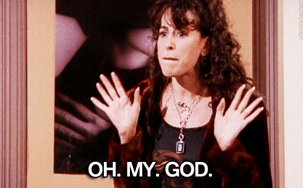
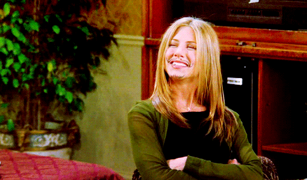
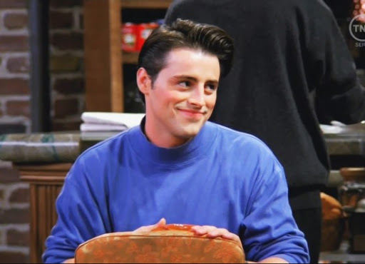
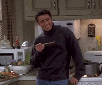
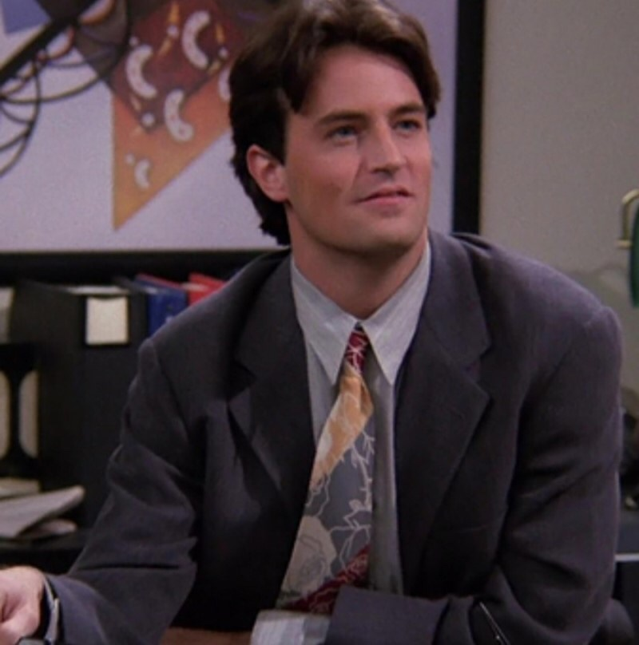
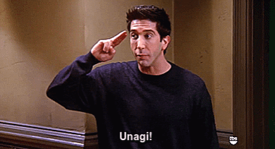
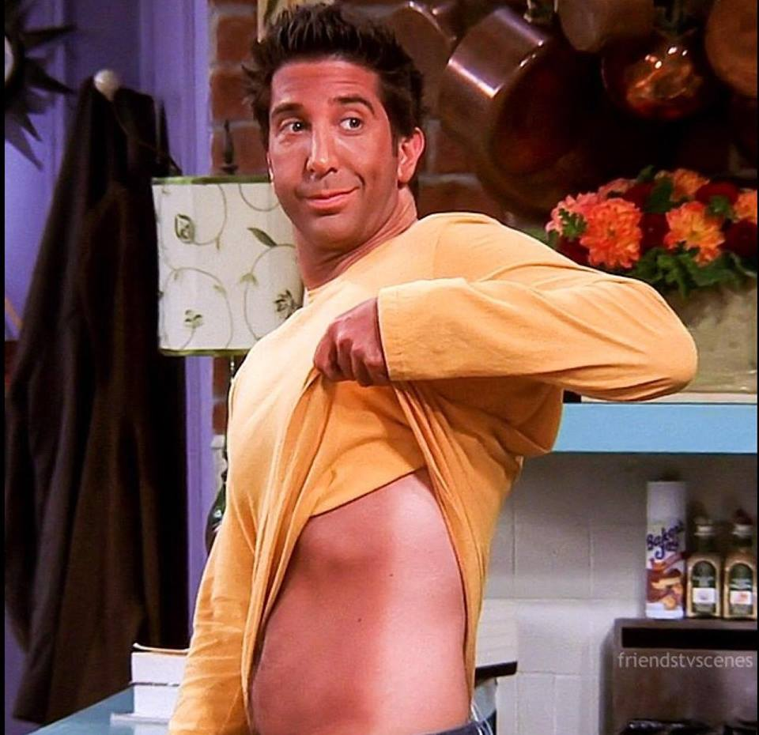
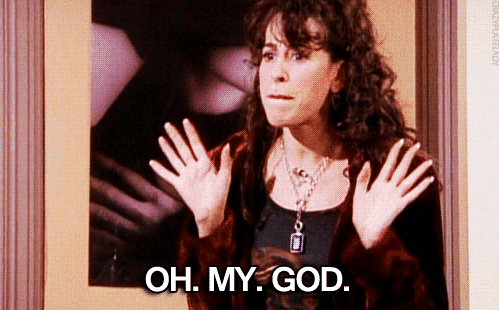

예를들면 재닛..
항상 저대사를 치면서 등장한다. 오,,,마,,,갓!!!!!!ㅋㅋㅋㅋㅋ보다보면 귀엽고 정든다.

엉덩이 춤추는 로스랑 레이첼.ㅋㅋㅋㅋ 저기에 노래부르면서 추는데 자꾸 생각난다. 아무튼 이런 자잘한 재미들이 콕콕 박혀있는 것이 프렌즈의 매력이다.
긴 시즌을 거듭하며 많은 에피소드들을 보고 무표정에서 점점 큭큭 웃고있는 내모습을 볼 수 있다.

사랑 없는 결혼을 하려던 레이첼이 결혼식에서 도망치면서 드라마의 모든 이야기가 시작된다. 카페 서빙일부터 패션회사 부장까지 해내는 레이첼!!그 과정은 좀 드라마 답다.ㅎ 방영당시 American sweetheart 라는 애칭이 있었다고 한다. 한국말로 치면 국민 여동생같은 느낌이 아닐지,, 드라마에서 가장 끊임없이 발전해나가는 사람! 정말 아빠 카드 쓰는거 말고는 아무것도 못하던 사람이 자신이 원하는 일을 찾고 열정적으로 사는 과정을 보면서 괜히 기특해하고 그랬다.. 남의 성장일기 보는 기분..

친구들사이에서 요리담당, 직업도 요리사다. 거기에 결벽증과 엄청나게 깔끔한 성격을 가지고 있다.
에피소드 중 진짜 웃겼던건 모니카와 동거하던 피비의 대사다.
"나는 흘려도 되는 세상에 살고싶어!!!!"ㅋㅋㅋㅋㅋ
그리고 칠면조 머리에 쓰고 춤추는 장면 ㅋㅋㅋㅋ 또.. 자잘하게 웃긴 에피소드가 많다. 승부욕도 엄청 강한데 그런 모습이 보일때가 제일 재밌다.
내기걸고 게임하는 에피소드에서 항상 엄청난 승부욕을 나타내는데 그 눈빛이 정말 최고다.
프렌즈에서 가장 알 수 없는 캐릭터. 내 최애다!! 거기엔 엄청나게 많은 이유가 있다.
우선 독특한 작사/작곡 능력과 종잡을 수 없는 재밌는 패션이다. 피비의 노래 중 가장 좋아하는 노래는 'smelly cat'
제목이 이게 맞는지는 모르겠다. 스멜리 켓~ 스멜리 켓~ 낫 유얼 폴트~ 그 특유의 음은 드라마를 봐야지만 알 수 있다.
가장 좋아하는 짤은 아악!!!! 내눈!! 하는 저 짤이다. 너무 웃겨 ㅋㅋㅋㅋ 그리고 마지막 시즌에서 피비의 결혼식이 너무 아름다워서 가장 기억에 남는다.
그 회만 엄청 돌려봤다. 피비 대사도 그 장면 모든게 그냥 다 감동이었다. 흑ㅠ 피비 최고..
조이는 정말 한 문장으로 설명가능하다. "How~ you~ doin~" 진짜 능글맞다. 숨만 쉬면 플러팅 하는 사람 바로 조이. 정말 조금 모자라지만 착한 친구다. 처음엔 너무 여자만 만나고 느끼해서 애정이 안갔지만 시즌을 거듭할 수록 보이는 성숙해지는 모습과 의리 넘치는 따뜻한 모습에 애정이 생겼다. 모니카의 집이 흘릴 수 없는 세상이라면 조이의 집은 흘릴 수 있는 세상이다. 좀 과장하면 그냥 흘리면서 사는 세상..?ㅋㅋㅋㅋㅋㅋㅋ레이첼과 같이 살게 되었을때 스파게티를 바닥에 뿌리면서 조이의 세상에 온 걸 환영해^^ 라고 하는 장면이 진짜 웃기다 ㅋㅋㅋㅋㅋ
짜증내는게 제일 매력적이다. 특히 저런 이상한 손동작이 웃기다. 아 또 대사의 특유의 재밌는 억양이 있다.나는 이사람의 직업을 아직도 잘 모르겠다. 심지어 프렌즈 캐릭터들도 극중에서 챈들러의 직업을 잘모른다. 그런데 내가 기억할 수 있을리가.. 컴퓨터 관련일을 한다 조이와 맨날 바보같은 짓을 하는데 캐미가 잘맞아서 재밌다.ㅋㅋㅋㅋㅋ 조이의 룸메이트로 처음 리클라이너 소파..?맞나 암튼 뒤로 누울 수 있는 소파를 샀을 때가 최애 에피소드다. 나도 그렇게 살고 싶었어..

공룡덕후 박사님. 엄청 똑똑한데.. 정말 공부만 잘한다. 시즌 내내 힘든일을 참 많이 겪는다. 로스가 재미없는 공룡얘기 할때마다 친구들이 바로 코를 곤다 ㅋㅋㅋ 뭔가 억울 시무룩한 표정을 지을때가 있는데 내 최애표정이다. 항상 챈들러랑 조이만 세트로 바보짓을 하는 거 같지만 로스도 만만치 않다. 제일 좋아하는 에피소드는 태닝하러 갔는데 몸 한쪽만 태닝된겈ㅋㅋㅋㅋ 결과물이 저 사진이다.완벽한 반반인간.

자세하고 친절한 시즌 설명은 나무위키 인터넷 선생님들의 힘을 빌리는게 좋을 것 같다.
시즌마다 회차도 많고 시간은 짧지만 드라마 보는 걸 시작하는게 제일 어려웠다. 특히 시즌1 1화는 도대체 무슨 재미로 보는거지라는 생각이 들었다.
근데 그냥 매일 20분씩 밥먹을때나 설거지할때 보면 쑥쑥 보게된다. 그러다보면 나도 모르게 보면서 웃고있다. 드라마에서 농담이나 재밌는 장면이 나올때마다 방청객 웃음 소리가 자주 나오는데
처음엔 그때마다 난 무표정이었다. 근데 시즌 2~3 정도 볼때 쯤이면 나도 같이 웃고있다. 처음은 조금 지루하고 공감이 안가더라도 조금만 참고 보는 걸 정말 추천한다.


입덕포인트은 바로 센트럴퍼크 소파다.ㅋㅋㅋㅋ장난이고 사실 뭐라 말할 수 없는 다양한 매력이 많은 드라마다.
캐릭터가 독특하고 재밌는 배우들이 6명 플러스 조연들도 엄청 많다.
예를들면 재닛..
항상 저대사를 치면서 등장한다. 오,,,마,,,갓!!!!!!ㅋㅋㅋㅋㅋ보다보면 귀엽고 정든다.
엉덩이 춤추는 로스랑 레이첼.ㅋㅋㅋㅋ 저기에 노래부르면서 추는데 자꾸 생각난다. 아무튼 이런 자잘한 재미들이 콕콕 박혀있는 것이 프렌즈의 매력이다.
긴 시즌을 거듭하며 많은 에피소드들을 보고 무표정에서
점점 큭큭 웃고있는 내모습을 볼 수 있다.